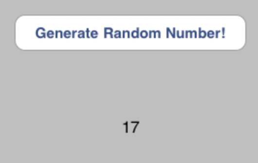

Website Basics
A basic website will contain 3 main components, HTML, CSS and Javascript or JS for short.
HTML is the content that will be on the page, headers, sentences and pictures etc...
CSS is how that content is styled, so CSS works to make things look pretty and adjust the spacings and positioning between all the content on the page.
JS is used to create interactive elements, which means anything interactive would have been built with javascript.
An example: A button that generates a random number each time it is pressed.

HTML: Will be the button and the name of the button.
CSS: How the button looks and where it is positioned.
JS: The function that causes the button to generate a random number when clicked.
An analogy to describe the differences between HTML and CSS
A way to visualise the difference HTML and CSS would be to compare them to a skeleton and skin, respectively. HTML is the foundation that keeps all the content together and CSS is what is added on top to make it look more appealing.
Control Flow
Control flow is essentially the order the functions/code will be executed in.
The control flow for Javascript is top down, so the code will run starting from the top.
This means functions can not use variables that have not been defined before it.
Which essentially means if you want to use a variable in a function, you should define it before the function so that it exists in the control flow.
Otherwise, you will try execute a function that uses something that doesn’t exist yet.
An example of control flow would be like shooting a basketball. You would need to define the variable 'basketball', so make sure the basketball exists before you try to use it.
Then the functions needed would be , ‘move ball into shooting position’, ‘bend legs’, ‘jump’, then ‘release the ball’.
You can now visualise that you can't shoot a basketball without first defining or bringing the basketball into existence.
Loopy Loops
Loops are a function/bit of code that you can use to run the same code over and over with a different value.
An example of a real life loop would be returning from a grocery shop and putting each item back in the cupboard or fridge.
You ‘loop’ through the contents of the bag and for each item you would want to assign them to the ‘cupboard’ or ‘fridge’.
What is the DOM and how to interact with it
The DOM or Document Object Model is essentially like a tree structure of all the contents on a web page.
Starting from the top being the document itself, then ‘branching’ off into small components until you get into the HTML content.

Some ways you might interact with the DOM would be to breakdown elements of a webpage to see how it is structured.
You can also use the DOM to edit your own code so that you don’t have to save your code and reload the page.
Once you are happy with some changes you can then just use the code from the DOM and paste it into your code.
The difference in accessing data from arrays and objects
Accessing data in an array is like accessing data in a list that contains multiple values.
E.g [cats, dogs, fish] each value in this array has an assigned number.
Arrays start counting from 0, therefore, cats would be assigned [0], dogs [1] and fish [2].
This is important to note as when selecting certain content from an array you MUST take into account that it starts at 0 and not 1.
In contrast, objects have properties, which is like a feature of the object.
E.g object = car, has the properties, model, colour, brand, age.
To access these properties you would put the object name, a period and then the property you want to access.
If I wanted to get the car colour, I would write car.colour in javascript.
What are functions and why are they useful?
Functions are blocks of code designed to carryout a particular task, they are actioned when they are ‘called’ by something.
Functions are useful when you want to push some values through code.
For example; if you wanted the function to do some maths for you.
You could make a function that divides two values and all you would need to do is input the values that you want to divide.
There are endless uses for functions.
As you can see here this function will run two value through and multiply them together.
However, if we still this code in, it is not going to do anything.
Now we need to 'call' that function and then give it a destination to put the value.
Here you can see that we are firstly accessing the area we would like to call the function to.
This is inside the 'document'and we want to target a certain 'id' and specify which id that is.
The innerHTML is saying that we want to edit the innerHTML of the tag that has the id "multiple".
The innerHTML is the empty text between the 'p' tags.
After that the code is saying we want to change that empty text into the product of the function that is being called.
Which in this case is 4 * 5, so we would then see that 20 would now be in those 'p' tags.